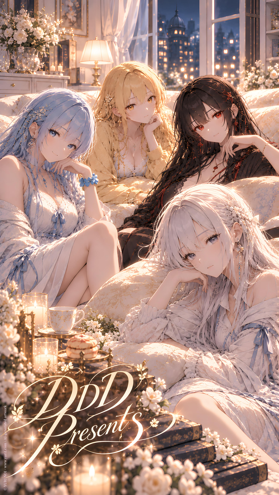

FEATURE／ YURI NO1
IP Story
CATEGORYFeature
SERIESFeature
Full Text · YURI NO1
YURI1’s IP Stories are divided into different series, each exploring different character combinations, worlds, and script-based performances.
---
**DDD Presents**
A series of scripted performances featuring members of DDD Studio in various CP combinations.
As the members are actors, different CP pairings may be formed according to the needs of each script, with a variety of fictional worlds and narrative styles, including but not limited to sweet, wild, serious, and darker themes.
The chapters do not follow a fixed chronology, and you may freely choose any story that interests you.
---
**Loading Night**
A scripted series featuring the fixed CP of DDD Studio members L.Night and E.Red.
L.Night and E.Red are lovers in their own right, and the two actors portray different identities and situations across various scripts and fictional worlds.
The series may explore different script styles, including but not limited to sweet, wild, serious, and darker themes.
The chapters do not follow a fixed chronology, and you may freely choose any story that interests you.
---
**Icy & Arte**
A series centered on the yuri couple Icy and Arte, who are actresses traveling across different scripts and identities, taking on various roles while portraying different relationships and character dynamics.
The series is primarily focused on sweet yuri, with a high-sugar atmosphere built around romantic interactions and affectionate everyday moments.
The chapters do not follow a fixed chronology, and you may freely choose any story that interests you.
---
**NO1**
A mysterious performance organization working in collaboration with DDD Studio, primarily centered around the scripted series Yuri Civilization Preservation Project.
The main members of NO1 bear a surprising resemblance to Icy, though the reason behind this remains unknown.
Because of this, whenever they appear together in cross-IP performances, there seems to be an additional connection between the members of NO1 and Icy.
Icy has also appeared in one of NO1's stories, portraying NO24.
---
**IP Collab**
A series featuring characters from different IPs as the main CP in scripted performances, exploring the fun of different IP combinations and the interactions between their personalities.
The stories may cross different fictional worlds and narrative styles, including but not limited to sweet, wild, serious, and darker themes.
The chapters do not follow a fixed chronology, and you may freely choose any story that interests you.